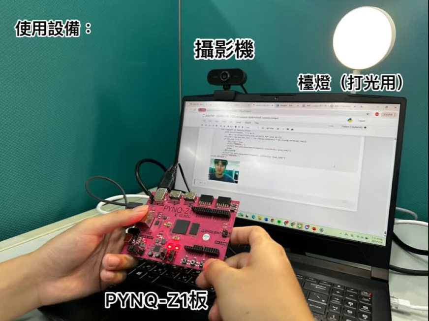

專注於軟硬體協同設計 (HW/SW Co-design) 與 FPGA 開發，結合資工的演算法思維與電機的硬體底層知識，致力於邊緣運算與嵌入式系統的效能優化與實作。 Specializing in HW/SW Co-design and FPGA development. Combining algorithmic thinking from Computer Science with low-level hardware knowledge from Electrical Engineering, dedicated to the performance optimization and implementation of edge computing and embedded systems.
📄 下載完整履歷 (PDF) 📄 Download Resume (PDF)allocate 分配實體連續記憶體。allocate for physically contiguous memory.
我們導入關鍵的 HLS 優化指令以解決效能瓶頸：
1. 循環管線化 (Pipeline): 使用 #pragma HLS PIPELINE II=1 達成單一週期啟動，使迴圈運算高度並行化。
2. 陣列分割 (Array Partition): 將陣列分割至多個 Memory Bank，增加硬體存取埠 (Ports)，解決存取延遲。
We introduced critical HLS pragmas to solve performance bottlenecks:
1. Loop Pipelining: Used #pragma HLS PIPELINE II=1 for single-cycle initiation, highly parallelizing loop computations.
2. Array Partitioning: Split arrays across multiple Memory Banks, increasing hardware ports to resolve access latency.

base.bit) 與模型推論 (design_1.bit) 的 Overlay，導致 FPGA 內部邏輯反覆重建，產生切換延遲。base.bit) and inference (design_1.bit) overlays, causing repeated internal logic reconstruction and switching delays.